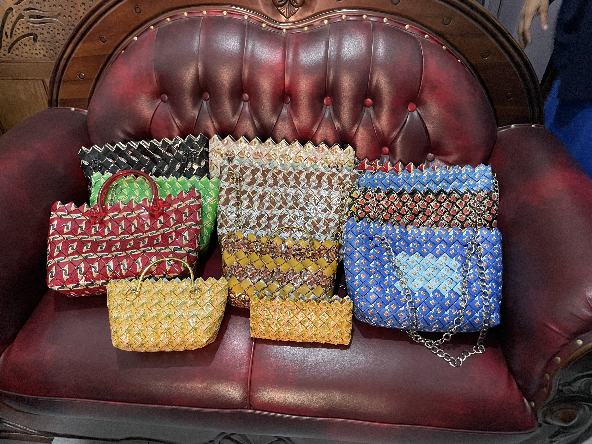

Kerajinan Tas dari Sampah Plastik
Dibuat dari bungkus kopi, minuman, dan plastik kemasan lainnya.
Sampah bukan akhir, tapi awal dari sesuatu yang bernilai dan bermanfaat.

Dari sampah rumah tangga menjadi pupuk yang berguna untuk taman dan kebun.

Plastik dan kemasan bekas dibuat menjadi tas yang kuat dan stylish.

Material daur ulang diubah menjadi dekorasi cantik dan bernilai seni.

Hiasan kreatif dari material bekas untuk mempercantik lingkungan.

Wadah tanaman yang dibuat dari barang bekas agar kembali berguna.

Dibuat dari bungkus kopi, minuman, dan plastik kemasan lainnya.
Pupuk yang memperkuat kualitas tanah dan taman lingkungan.
Hiasan cantik untuk menyemarakkan acara lingkungan dan rumah tangga.
Hiasan kreatif dari material bekas.
Wadah tanaman dari barang bekas.